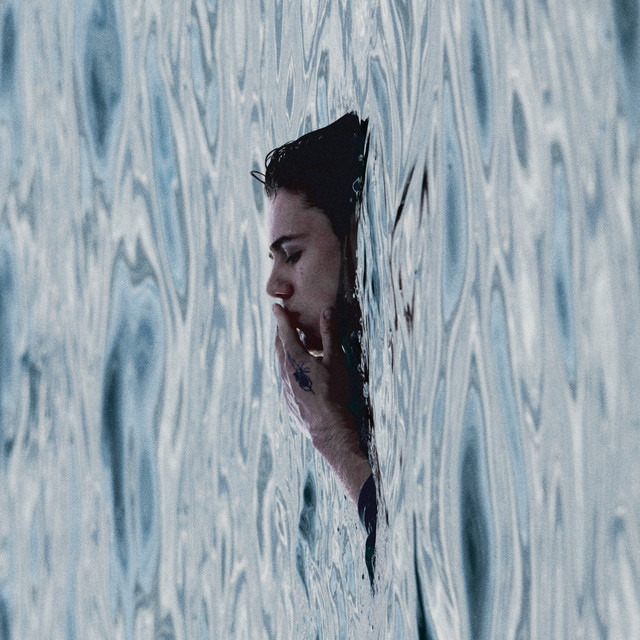
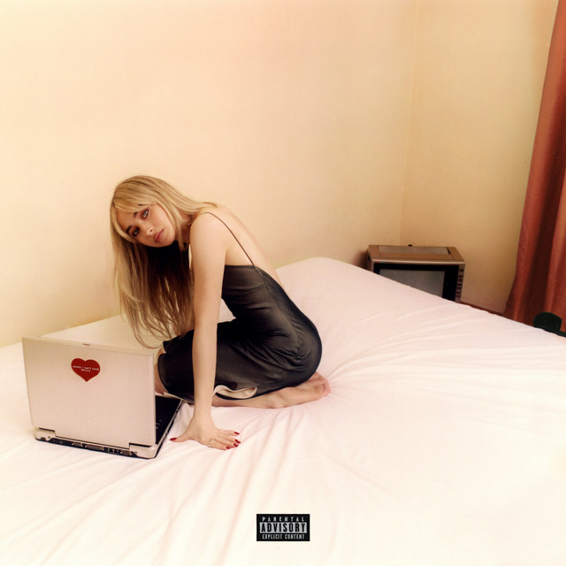

Quantum Antara Ruang dan Masa
one of the current reads, and a reminder that physics and intuition are often more beautiful than equations alone.
ろくろのホームページ · personal site
favorites
small collection
anything that made me interest in.
one of the current reads, and a reminder that physics and intuition are often more beautiful than equations alone.
yes the novel Nolan made it as a movie.
one of other books on Real Analysis that i read, plus i forgot it's in my course
Charlie Puth
Zara Larsson
Central Cee

The Kid LAROI
Kehlani

Sabrina Carpenter